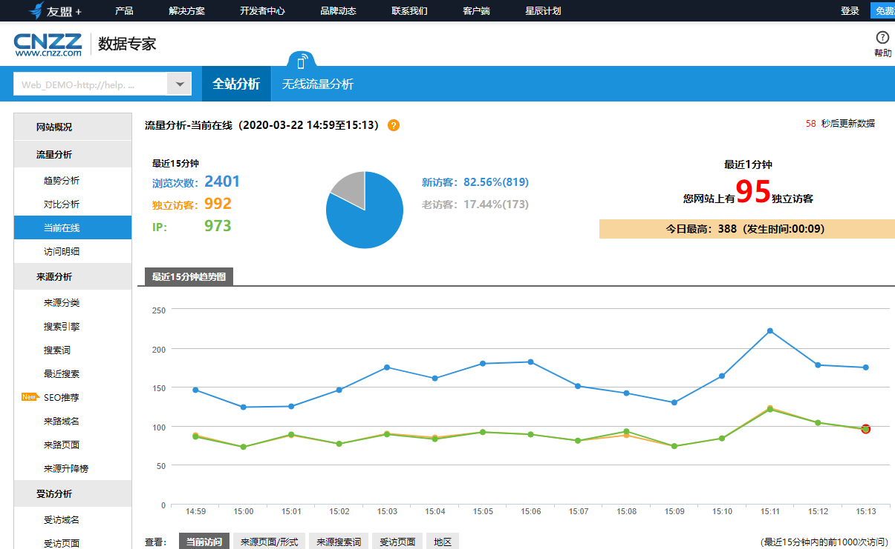
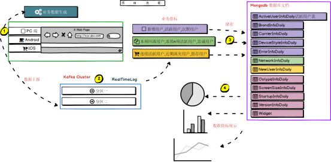
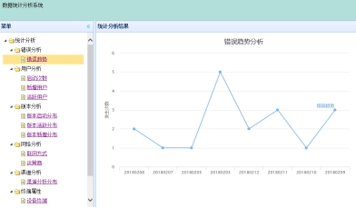
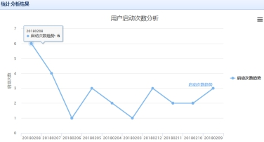
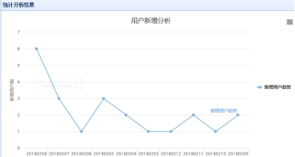
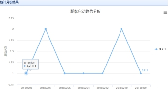
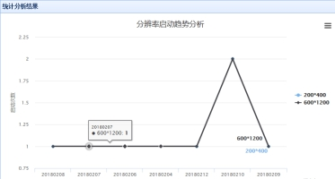

友盟电商分析系统[仿]
友盟官网: https://web.umeng.com/

本項目是一个真实的企业级云产品项目，该项目是国内专业的移动应用统计分析平台，每天触达14亿活跃设备，每月覆盖80%以上新增手机消费者，几乎覆盖全部iOS消费者，通过该项目系统帮助移动应用开发商统计和分析流量来源、内容使用、用户属性和行为数据，以便开发商利用数据进行产品、运营、推广策略的决策。提供基本统计、活跃用户、使用频率、使用时长、页面访问、地域分析、版本分析、渠道分析、设备分析、操作系统、分辨率、运营商、联网方式、自定义事件分析、终端异常分析,流失用户分析等多种统计分析手段。
项目所用到的开发环境和用到的技术
系统：window7，
开发工具是:eclipse，IDEA，
本项目是一个综合项目，技术涵盖java web，大数据，虚拟化，linux服务器等
具体包含： spring，spark，spark streaming, kafka，mongodb，dubbo,分布式缓存，docker, tomcat ,easyui，highcharts等等。
此项目是按照真实企业级开发项目流程进行开发，需要熟练掌握大数据技术，java web技术，docker虚拟化技术，分布式技术，缓存技术，linux等
(二)项目总体需求分析
1.项目背景
在这个互联网爆发的时代，移动网络，移动设备逐渐成为人们的必备品，移动设备的用户已经达到几亿，可想而知，app必将流行起来，但是每一款app都要运营，达到盈利的目的，那么这个运营怎么做呢？要借助大数据的技术，准确分析用户的行为，这必将会有很大的需求。
2.项目需求
在这个互联网爆发的时代，移动网络，移动设备逐渐成为人们的必备品，移动设备的用户已经达到几亿，可想而知，app必将流行起来，但是每一款app都要运营，达到盈利的目的，那么这个运营怎么做呢，要借助大数据的技术，准确分析用户的行为，这必将会有很大的需求。急需一个系统帮助各大中小企业快速的分析app用户的行为，只需要接入提供的sdk，就可以轻松的了解用户的行为，享受大数据技术带来的时代变革。通过该产品可以了解到：app的应用趋势，app的渠道推广情况，用户留存情况，用户的行为分析，用户属性分析，应用错误分析，用户数据挖掘，并且需要实时去展示这些分析结果。
业务名词解析:
新增用户：小白第一次安装了应用，那他就是一个新增用户
活跃用户：小白当天启动了应用，然后过了一小时又启动了应用，那他就是一个天活跃用户
沉默用户：小白第一天第一次启动了应用，然后过了2天还没有启动应用的就算沉默用户
本周回流用户：小白上上周启动了应用，上周没启动应用，本周启动了应用，那他就是一个本周回流用户
连续n周活跃用户：小白上周启动了应用，这周有启动了应用，那他就是一个连续2周活跃的用户
忠诚用户：小白连续活跃5周的，一定是连续的，那他就是一个忠诚用户
连续活跃用户：小白上上周启动了应用，上周启动了应用，本周又启动了应用，那么他就是一个连续活跃用户
近期流失用户：小白上周没有启动应用，本周又没启动应用的就算是，那么他就是一个近期流失用户
留存用户：小白今天第一次安装和启动了应用，然后过了一天后，他又启动应用，就算是一个今天这个时间的留存用户
3.系统功能
可以查看该app的用户活跃度，每个时段的新增用户，app的终端使用分类情况，沉默用户，和忠诚用户的统计和查看等。
项目架构设计以及流程
系统架构

系统前端展示效果(部分截图)





（三）项目整体环境搭建
1.机器选型、节点规划等。
2.集群环境搭建
（四）相关项目内容
1.物理架构，逻辑架构
2.上报数据服务的设计与开发
3.实时处理数据的环境搭建和程序开发
4.日志收集系统设计
5.离线任务的设计和开发
6.高并发，缓存，虚拟化等